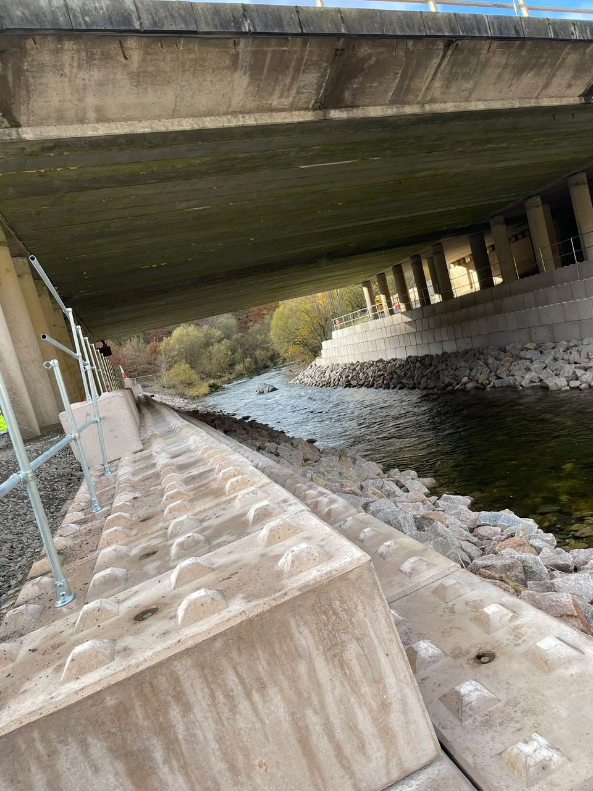
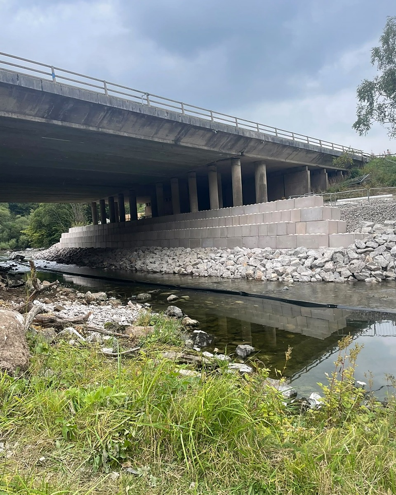
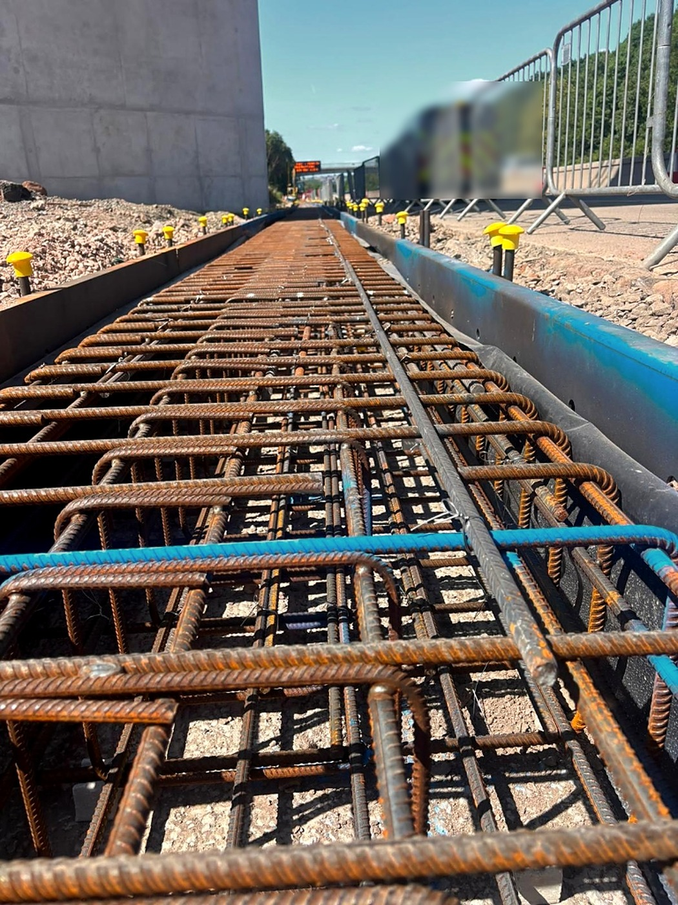
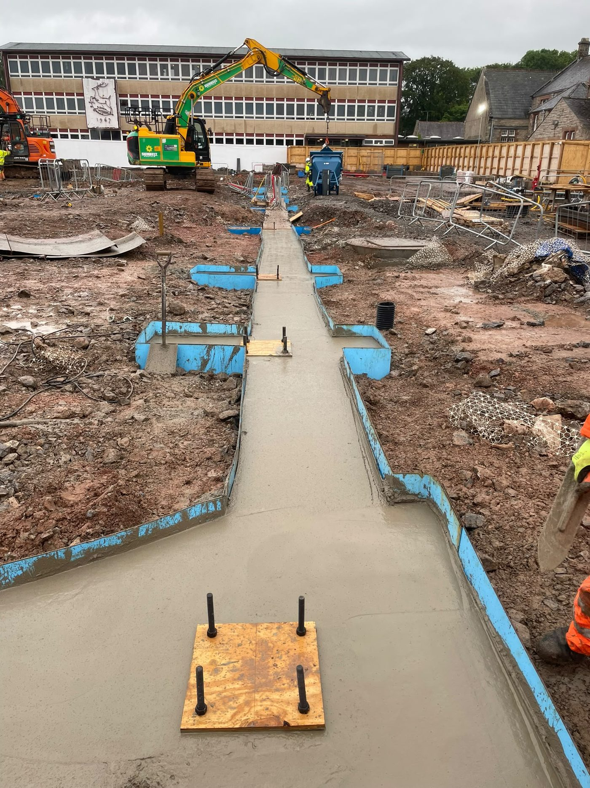
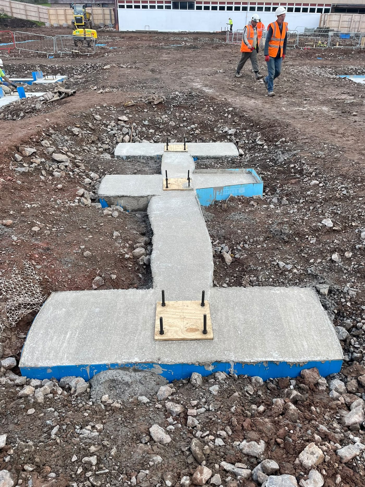
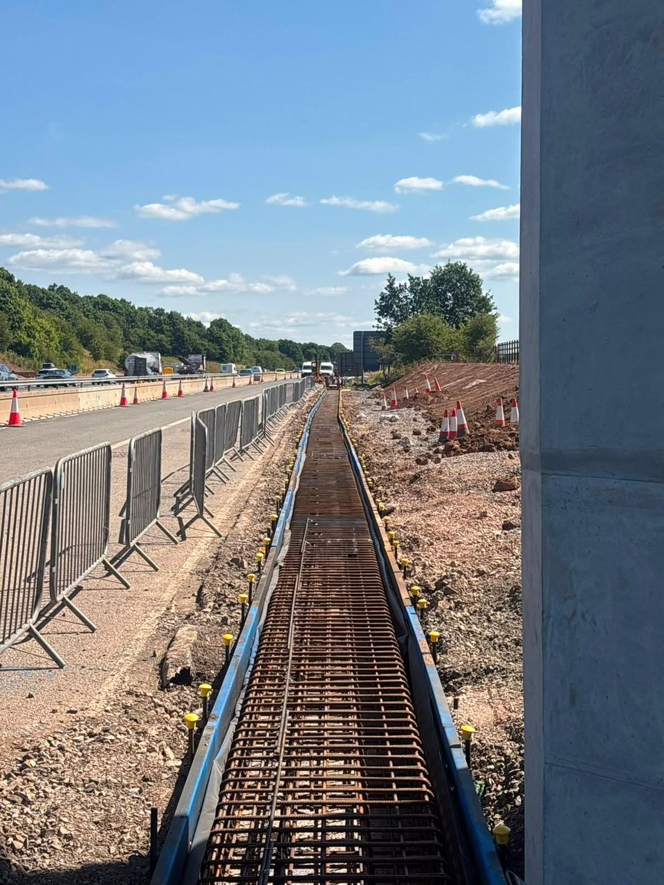

Bridges & Structural Engineering
Bridges and structures set out accurately and checked as they are built, with clear records for handover.







What you get on bridges and structures
On bridges and structures, mistakes are hard to put right once concrete is poured. Ryan sets out each stage, checks positions and levels against the drawings, and monitors movement where the job needs it.
Setting out, dimensional checks, structural monitoring and as-built surveys for new bridges, refurbishment projects and reinforced concrete structures.
- Bridge construction & substructure setting outSetting out foundations, abutments and piers on new bridges, refurbishments and replacements.
- Bearings, decks & parapet positioningBearings and structural elements positioned accurately, with deck and parapet setting out.
- Dimensional checks & deformation monitoringDimensional checks, structural movement and deformation monitoring, and precise level surveys.
- Reinforced concrete checks & structural as-builtsReinforced concrete construction checks and as-built surveys of the finished structure for project records.
See the full list (10)
- Bridge construction setting out
- Bridge foundations, abutments and piers
- Bearing and structural element positioning
- Bridge deck and parapet setting out
- Structural dimensional verification
- Bridge refurbishment and replacement projects
- Structural movement and deformation monitoring
- Precise level surveys
- Reinforced concrete construction checks
- Structural as-built surveys
What to send Ryan
You don’t need all of this before getting in touch. Send what you have and Ryan will plan and price the job from there.
Not sure what you’ve got? Call 07956 996 424 and talk it through.
- The site address or postcodeWhere the job is.
- The structural drawingsGeneral arrangement and structural drawings, PDF or CAD.
- The stage of the workFoundations, substructure, bearings and deck, or refurbishment.
- Tolerances to check againstIf the job involves checks or monitoring.
- When you need it, and who to meet on siteRough dates are fine.
Discuss your project with Ryan
Call or email Ryan Johnston directly, or send an enquiry with this service already selected.
07956 996 424 ryan@rgcivilengineering.co.uk